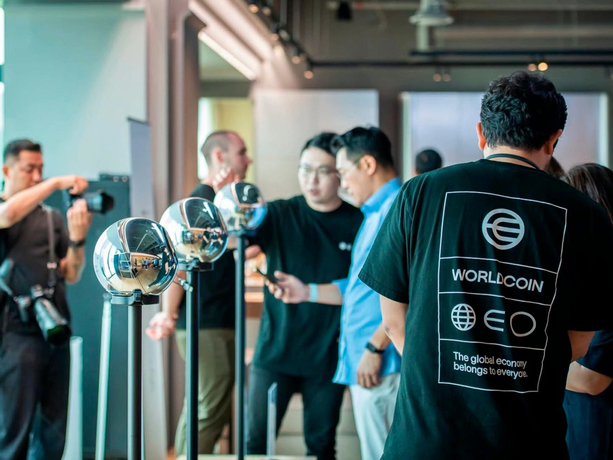
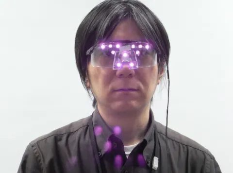
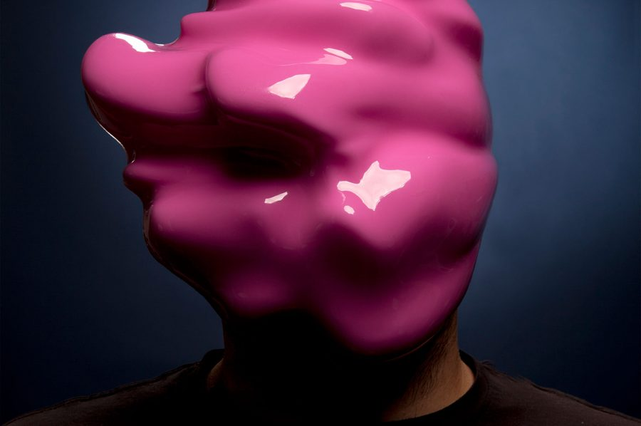
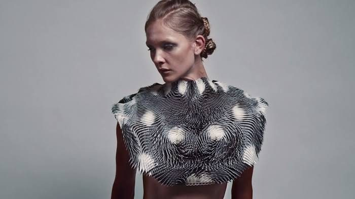
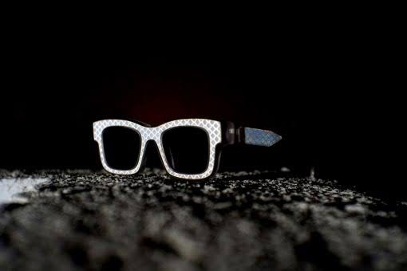

Desbloqueo facial y de iris
Algunos teléfonos han usado escáneres de iris para desbloquear. [Añadir ejemplos y fechas.]
Qué revela un ojo, cómo se captura y quién lo usa. Nueve capítulos.
Escanea tu ojo o responde nuestra encuesta. Tú eliges.
Diario del proyecto: decisiones, bocetos y pruebas.
El objeto final que se lleva puesto.
Antes de diseñar un wearable, queríamos entender qué se puede saber de una persona solo con mirarle a los ojos, quién lo está haciendo ya y qué dice la ley. Esta es la investigación completa, capítulo a capítulo.
Empezamos este proyecto con una pregunta sencilla: ¿qué entregamos cuando dejamos que una máquina nos mire a los ojos? Desbloqueamos el móvil con la cara, cruzamos controles de aeropuerto con escáneres y probamos gafas de realidad virtual que siguen cada movimiento de nuestra mirada. Lo hacemos casi sin pensar, porque es cómodo y rápido.
La asignatura DATA nos pide diseñar un wearable a partir de datos. En lugar de partir de un dato que el objeto recoja, quisimos partir de un dato que ya nos están recogiendo. El ojo nos pareció el caso más claro: es íntimo, es único y casi nadie sabe todo lo que dice de nosotros.
Esta investigación recoge lo que hemos aprendido sobre el ojo como fuente de datos: su anatomía, las tecnologías que lo leen, los casos reales, el marco legal y los proyectos de arte y diseño que ya han trabajado sobre vigilancia y cuerpo. Al final, extraemos los criterios que guiarán el diseño del wearable.
No queremos diseñar un objeto que recoja datos. Queremos diseñar uno que haga visible que ya nos los están quitando.
Pregunta de partida del proyectoEl ojo tiene varias capas y cada una cuenta algo distinto. Para entender qué se puede leer, hay que separar lo que es fijo, como el iris o la retina, de lo que cambia a cada segundo, como la pupila o la dirección de la mirada.
El iris es el anillo de color que rodea la pupila. Su textura de fibras, criptas y surcos se forma durante el desarrollo fetal y apenas cambia en la vida adulta. Es distinto en cada ojo, incluso entre gemelos idénticos, lo que lo convierte en uno de los identificadores biométricos más fiables.
[Añadir aquí más detalle sobre la formación del iris y por qué es tan estable. Citar fuente.]
La pupila se abre y se cierra con la luz, pero también con el esfuerzo mental, la atención y la emoción. Estudios de los años sesenta ya relacionaron la dilatación de la pupila con la carga cognitiva. Es un dato que no podemos controlar de forma voluntaria.
En el fondo del ojo, los vasos sanguíneos de la retina se pueden fotografiar sin cirugía. Investigaciones recientes con aprendizaje automático han usado esas imágenes para estimar factores como la edad o el riesgo cardiovascular.
Por último, la dirección de la mirada revela qué nos llama la atención, en qué orden leemos y cuánto tiempo nos detenemos en algo. Es la base del eye tracking.
| Parte | Tipo de dato | Qué puede revelar | ¿Cambia? |
|---|---|---|---|
| Iris | Biométrico | Identidad | No |
| Retina | Biométrico / salud | Identidad, edad, indicadores de salud | Poco |
| Pupila | Fisiológico | Atención, esfuerzo, emoción | Cada segundo |
| Mirada | Conductual | Intereses, lectura, decisiones | Cada segundo |
Leer un ojo ya no requiere un laboratorio. Las cámaras de los móviles, los visores de realidad virtual y los escáneres de acceso pueden capturarlo, a menudo con luz infrarroja que no vemos.
Un sistema de reconocimiento de iris no guarda una foto. Localiza el iris, lo “desenrolla” en una banda rectangular y lo convierte en un código binario. El método más conocido, el IrisCode desarrollado por John Daugman, representa cada iris con 2048 bits. Para saber si dos ojos son el mismo, el sistema compara los dos códigos y cuenta cuántos bits son distintos.
Algunos teléfonos han usado escáneres de iris para desbloquear. [Añadir ejemplos y fechas.]
Visores como Apple Vision Pro siguen la mirada para controlar la interfaz y usan el iris para identificar al usuario (Optic ID).
Aeropuertos y fronteras usan iris y rostro para verificar identidades. [Añadir casos en Europa.]
Estudios de mercado usan eye tracking para saber qué miramos en un anuncio o una tienda.
Estos casos muestran que entregar el ojo ya no es ciencia ficción. Algunos son voluntarios, otros obligatorios, y en casi todos la persona sabe poco de lo que pasa después con su dato.
El proyecto World escanea el iris de las personas con un dispositivo esférico llamado Orb y les ofrece criptomoneda a cambio. En 2024, la Agencia Española de Protección de Datos ordenó suspender de forma cautelar su recogida de datos en España. Es un caso muy cercano a nuestro experimento: dar el ojo a cambio de algo, sin entender bien qué se entrega.
[Ampliar: cifras de personas escaneadas, colas en centros comerciales, argumentos de la empresa y de las autoridades.]

El sistema de identidad digital de India registra huellas dactilares e iris de más de mil millones de personas. Es el mayor registro biométrico del mundo y muestra lo que significa que el ojo se convierta en documento de identidad.
Los visores con seguimiento ocular pueden registrar a qué miramos y cómo reaccionamos. [Añadir casos y declaraciones de las empresas sobre el uso de estos datos.]
[Espacio para un caso que encontréis vosotros: título, qué pasa, por qué es relevante para el proyecto.]
En Europa, los datos biométricos que sirven para identificar a una persona tienen una protección especial. Eso no significa que no se recojan, sino que hacen falta condiciones concretas, como el consentimiento explícito.
El Reglamento General de Protección de Datos incluye los datos biométricos dirigidos a identificar de manera unívoca a una persona entre las categorías especiales de datos (artículo 9). Por regla general, su tratamiento está prohibido salvo excepciones como el consentimiento explícito.
La Ley de Inteligencia Artificial prohíbe algunos usos, como el reconocimiento de emociones en el trabajo y en centros educativos, o la categorización biométrica para deducir datos sensibles. [Comprobar el texto exacto y las fechas de aplicación.]
Una contraseña filtrada se cambia. Un iris filtrado es para siempre.
Idea clave del capítulo[Reflexión propia: el consentimiento que damos sin leer, la diferencia entre lo legal y lo que la gente entiende, el caso del experimento.]
Otros artistas y diseñadores ya han trabajado la relación entre cuerpo, cara y vigilancia. Nos interesan sobre todo los que convierten la crítica en un objeto que se lleva puesto. Verificar autores y años
Unas gafas con LED de infrarrojo cercano, desarrolladas en el National Institute of Informatics de Japón. La luz es invisible para las personas, pero las cámaras sí la captan, y así se impide que detecten la cara. Nos interesa porque usa electrónica para proteger justo la zona de los ojos.
Máscaras colectivas que no se pueden leer como un rostro, como protesta contra el reconocimiento facial.
Una prenda impresa en 3D que se lleva sobre los hombros. Una pequeña cámara con seguimiento ocular detecta quién la mira y hacia dónde, y la prenda se mueve en respuesta. Es un wearable con sensores, programación y actuadores que convierte la mirada de los demás en un dato visible.
Gafas cuyas lentes y montura reflejan la luz infrarroja que usan muchas cámaras de vigilancia, de modo que la zona de los ojos sale borrosa o brillante. Fueron seleccionadas en los Beazley Designs of the Year del Design Museum. Es el referente más cercano a nuestro proyecto: actúan justo sobre el ojo.




Las encuestas muestran una contradicción: la gente dice que le preocupa su privacidad, pero acepta condiciones sin leerlas y cada vez se siente más cómoda usando su cuerpo como contraseña.
Según un estudio de Deloitte con 2.000 consumidores de Estados Unidos, el 91 % acepta los términos y condiciones sin leerlos, y entre los jóvenes de 18 a 34 años la cifra sube al 97 %. Es justo lo que pone a prueba nuestro experimento con la letra pequeña.
En España, el estudio Future of Identity de IBM (2018) encontró que el 55 % ve la privacidad como una de las principales barreras de la biometría. Aun así, el 44 % considera la huella dactilar el método de acceso más seguro, por delante de las contraseñas (27 %). Entre los millennials, el 75 % dice sentirse cómodo con la biometría, frente al 58 % de los mayores de 55 años.
La confianza depende de quién mire. En una encuesta de Pew Research (2019), el 56 % de los estadounidenses confiaba en que la policía usara el reconocimiento facial de forma responsable, pero solo el 15 % veía aceptable que se usara para medir cómo reacciona la gente a la publicidad.
“Le doy la cara al móvil veinte veces al día y nunca me he preguntado dónde se guarda. Si me piden el ojo a cambio de algo gratis, seguramente también lo daría.”
Entrevista 23 · estudiante, 21 años[Añadir aquí los resultados de vuestras propias entrevistas o encuestas.]
De la investigación sacamos tres ideas. Cada una se convierte en un requisito para el diseño del wearable.
Una contraseña se cambia, un iris no. Entregarlo tiene consecuencias para toda la vida.
RequisitoEl wearable debe proteger el ojo antes de que se capture, no después.
Se hace con luz infrarroja, cámaras pequeñas y pantallas que dan las gracias. No sabemos cuándo nos están leyendo.
RequisitoEl wearable debe hacer visible lo que hoy no se ve: avisar, reaccionar o mostrar que alguien mira.
Aceptamos sin leer y a cambio de muy poco, como muestra nuestro trabajo de campo.
RequisitoEl wearable debe funcionar sin que la persona tenga que leer, configurar ni decidir nada en el momento.
Ocho preguntas sobre lo que sabes de tus datos biométricos y lo que estarías dispuesto a dar. No guardamos tu nombre.
Sube una foto de cerca de tu ojo. Analizamos más de 240 puntos de su textura y te devolvemos un informe personal. Gratis, en segundos.
El patrón del iris es irrepetible y no cambia en toda tu vida. Te identifica mejor que tu huella dactilar.
El anillo del limbo y la respuesta de la pupila delatan cuántos años tienes.
Señales asociadas a diabetes, colesterol alto o hipertensión aparecen en el ojo.
Dilatación, fatiga y estrés quedan registrados en el momento exacto de la foto.
No te vamos a decir nada.Gracias por regalarnos tu ojo.
Puedes cambiar una contraseña. No puedes cambiar tu iris. Acabas de entregarlo a cambio de una promesa, sin leer la letra pequeña.
No existe ningún informe. Tu foto no se ha guardado ni ha salido de tu dispositivo. Queríamos comprobar con qué facilidad alguien entrega su iris a cambio de una promesa y sin leer la letra pequeña.
No hay informe. La oferta solo servía para que quisieras subir la foto.
El texto decía que regalabas tu imagen para siempre, a terceros y para entrenar IA. Estaba ahí, pero en gris y a 10 px.
Solo era una animación. No se analizó nada.
El modelo, la pantalla, el idioma y la hora los puede leer cualquier web en cuanto entras. Aquí se leyeron en local y no se enviaron.
La página falsa mezclaba datos reales con promesas exageradas, igual que hacen muchos servicios. Esto es lo que había detrás de cada frase.
| Lo que decíamos | Veredicto | Por qué |
|---|---|---|
| El iris te identifica mejor que tu huella | Cierto | El reconocimiento de iris es uno de los métodos biométricos más precisos, y el patrón apenas cambia en la vida. |
| “1 entre 10⁷⁸” | Exagerado | Es una cifra llamativa sin una fuente clara. La idea, que es casi imposible que dos iris coincidan, sí es correcta. |
| Tu edad, con ± 3 años | Exagerado | Hay estudios que estiman la edad a partir del ojo, sobre todo de la retina, pero no con una foto de móvil. |
| Diabetes o colesterol en el iris | Falso | La iridología no tiene base científica. Algunos indicadores de salud sí se ven en la retina, que necesita otro tipo de imagen. |
| Tu estado emocional | Exagerado | La pupila reacciona al esfuerzo y a la emoción, pero hace falta medirla en el tiempo. Una sola foto no basta. |
| Los datos de tu dispositivo | Cierto | Cualquier web puede leer el modelo, la pantalla, el idioma y la zona horaria sin pedir permiso. |
En la investigación vimos que la gente entrega datos biométricos a cambio de muy poco, como en el caso de World, que escaneaba iris a cambio de criptomoneda. Queríamos comprobarlo de cerca: una web que promete algo gratis, esconde las condiciones y no explica nada.
El susto final no busca asustar por asustar. Sirve para que la persona sienta durante unos segundos lo que significa perder el control de un dato que no se puede cambiar, y después explicarle qué ha pasado.
[Cómo compartisteis la web: QR en la escuela, redes, clase…]
Una página con aspecto de servicio real ofrece un informe gratis del iris.
La persona sube la foto y acepta unos términos abusivos.
Simulación de robo, “UPSSS” y explicación del experimento.
Resultados pendientes · añadir al cerrar el experimento
Cómo hemos llegado hasta aquí: cada fase con sus decisiones, sus dudas y lo que hemos descartado.
Elegimos el ojo como punto de partida: privacidad, biometría y lo que nos pueden sacar sin saberlo.
[Qué otros temas descartasteis y por qué.]
Lectura, referentes, casos reales y la web “Gracias por tu ojo”.
[Qué habéis aprendido hasta ahora y qué os ha sorprendido.]
[Ideas del wearable, bocetos, mapas mentales.]
[Pruebas de forma, materiales, electrónica si la hay.]
[Fotos finales, presentación y exposición.]
Un objeto que se lleva puesto y que [qué hace]. Esta página se completará cuando tengamos el producto final.
[Explicación del concepto en dos o tres frases. Qué es, para quién es y qué problema de la investigación responde.]
¿Puede un objeto proteger la mirada de quien lo lleva?
¿O debería hacer visible que alguien te está leyendo?
¿Y si devolviera la mirada a quien vigila?
[Describir la interacción paso a paso.]
[Dónde se lleva y cómo se coloca.]
[Qué percibe el objeto o qué reacción tiene.]
[Qué hace el objeto y qué ve la otra persona.]
| Tipología | [Gafas, máscara, collar, accesorio…] |
| Materiales | [Material principal, acabados] |
| Medidas | [Alto × ancho × fondo, peso] |
| Tecnología | [Sensores, LED, ninguna…] |
| Datos | [Qué dato usa o protege] |
| Fabricación | [Impresión 3D, corte láser, a mano…] |